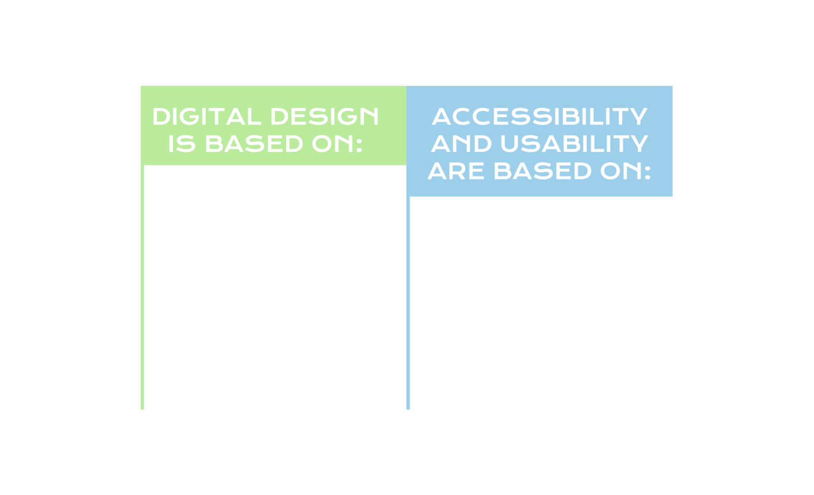
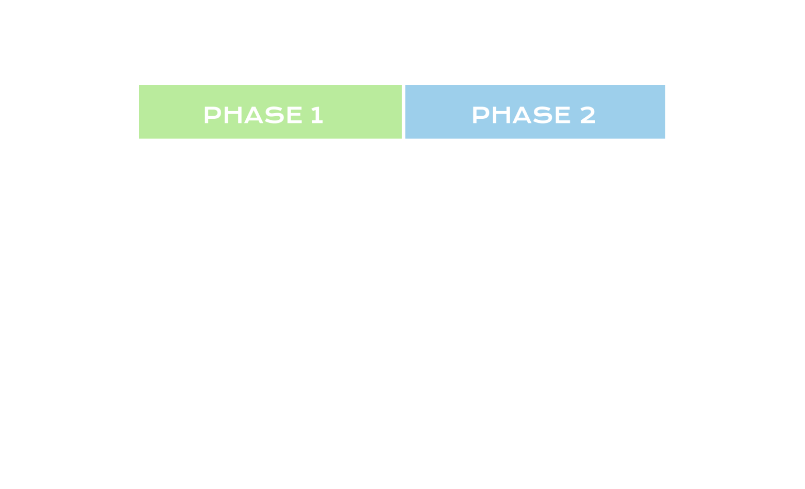

BACKGROUND
Fall 2022
Grade 5/5
Haaga-Helia University of Applied Sciences
Link to full thesis in Theseus database
I wrote my bachelor's thesis for Haaga-Helia University of Applied Sciences in the fall of 2022. I wanted to carry out research regarding the inefficacy of popular techniques used to produce accessible and usable web-content. In my opinion, digital design has become more and more trend-based, and shifts in aesthetics come and go quickly. This can lead to web-content that is not accessible for many people, which often also suffers from usability problems. I set out to define popular aspects of modern digital design, and then finding ways to improve their accessibility and usability through research-based methods of development. You can read the full thesis (mandatorily written in finnish) from the link above, and on this page I will provide a quick summary of the contents in english.
GROUNDWORK
Accessibility and usability are important factors to consider when creating web-content.
In my thesis, I go over the most popular design techniques used in digital design, as well as some of the definitions the term itself has accumulated.
Forming a basis of how digital content is produced from a design-standpoint was crucial for the research.
Using this base of knowledge it is possible to define commonly used techniques and restrictions that are associated with with digital platforms.
After defining what digital design is and how it correlates to my thesis, I go into further detail regarding the most common guidelines
for accesibility and usability. In short, the Web Content Accessibility Guidelines document (maintained and created by the World Wide Web Consortium - W3C),
is by far the most popular framework for assessing the accessibility of web-content.
It is used in legislature across nations in differing levels of detail to restrict private and public (government) web-content to achieve better accessibility.
As for usability, Jakob Nielsen's 10 usability heuristics for interaction design hold the most weight in terms of influence.
These heuristics are applied in a number of fields, and they are often the basis for usability-driven design.
With my thesis, I wanted to broaden the horizon of digital design in terms of concrete ways to apply accessibility and usability practices,
while still supporting a modern take on design.
The image below displays a general overview of the contents of the information base -section of my thesis.

RESEARCH METHOD
The research consisted of finding popular, modern visual trends used in digital design, and then applying accessibility and usability guidelines to those specific trends. This allows the production of a semi-accurate depiction of digital design and its interaction with these guidelines. The subjects were chosen in terms of popularity (pageview statistics) and effectiveness (does the page allow users to create more web-content). The subjects were then analyzed manually - for a more accurate result - and used to produce the visual techniques used in said subjects. Previously there have been similarly conducted studies, but the majority of them rely on the automatic analyzing of subjects. I wanted to subvert this caveat and produce a more organic take on digital design, which is directly linked to the design process. Collages were made for all trends to not only display visually what they were, but to also act as source material for where and how the trends were found. The image below depicts the two phases of the research project itself.

RESULTS
The results of the research were an in-depth look at what guidelines pertain to specific visual tools and techniques. This information can be used not only to save time when designing web-content, but to also aid in a design-driven approach to digital design in general. The research method allows for the reporoduction of the study using different, as well as more, subjects. Below I've compiled a visualization of the results, which portrays specific design-trends as well as their corresponding WCAG 2.1 and Nielsen's Heuristic guidelines.
